Staff collect and tag your golf bag, then you check in and receive tournament swag without leaving the car.
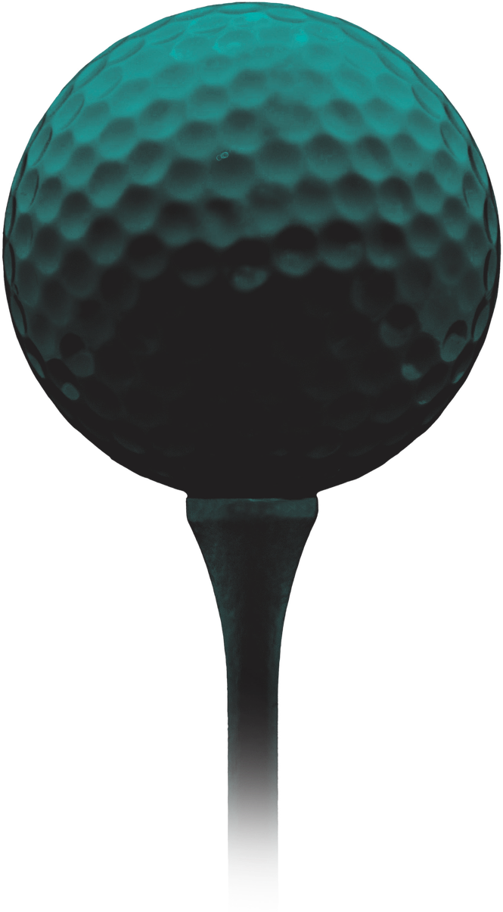
Bethpage Black · July 27, 2026
Everything you need,
hole by hole.
Yellow tees · personalized for your starting hole, group handicap, and reliable club distances.
Your shotgun startHole 14 · 11:00 AM
First food stopHole 14 · Sushi
Walking courseLighten your bag before arrival.Caddie courtesyPlan as a foursome to tip both caddies appropriately.Best-ball scoringEnter every individual score in Golf Genius after each hole.
Why we play
More than a round of golf.
Today supports Ohel’s care and critical services for children, adults, and families facing mental-health challenges, developmental disabilities, family crises, domestic violence, aging, and trauma — locally and through trauma-response work in Israel.
Turn today’s round into lasting impact.
Every gift helps Ohel continue essential care for people and families who rely on it.
Donate to Ohel ↗See Ohel’s impactBefore the first swing
Event essentials
Park in the designated lot. A complimentary shuttle returns you to the clubhouse for breakfast.
Carts take players to their starting holes and return them after play. The course itself is walking only.
They will carry the bags. Remove unnecessary items before arrival; locker rooms and changing facilities are available.
Caddie courtesy: Please coordinate as a foursome and tip both caddies appropriately at the end of the round.
Address and arrival checklist
Bethpage State Park
99 Quaker Meeting House Rd, Farmingdale, NY 11735
- Enter the forecourt and remain in your car.
- Let staff collect and tag your golf bag.
- Complete check-in and receive tournament swag.
- Park in the designated lot and take the shuttle to breakfast.
Make it yours
Set up your foursome
Use normal, playable distances — not the best shot you have ever hit. Your choices stay on this device and can travel in a shareable link.
Group setupHole 14 · 17 HCP · 225-yard driver
The team formula
One safe ball unlocks three aggressive swings.
- Fairway first.Steadiest player puts a ball in play.
- React, don’t preset.Only attack after you know the team is covered.
- Middle beats tucked.Bethpage rough and bunkers turn flags into doubles.
- Bogey can count.On 15, 16 and 10–12, avoid four simultaneous disasters.
Hole14
Pin vs center-7
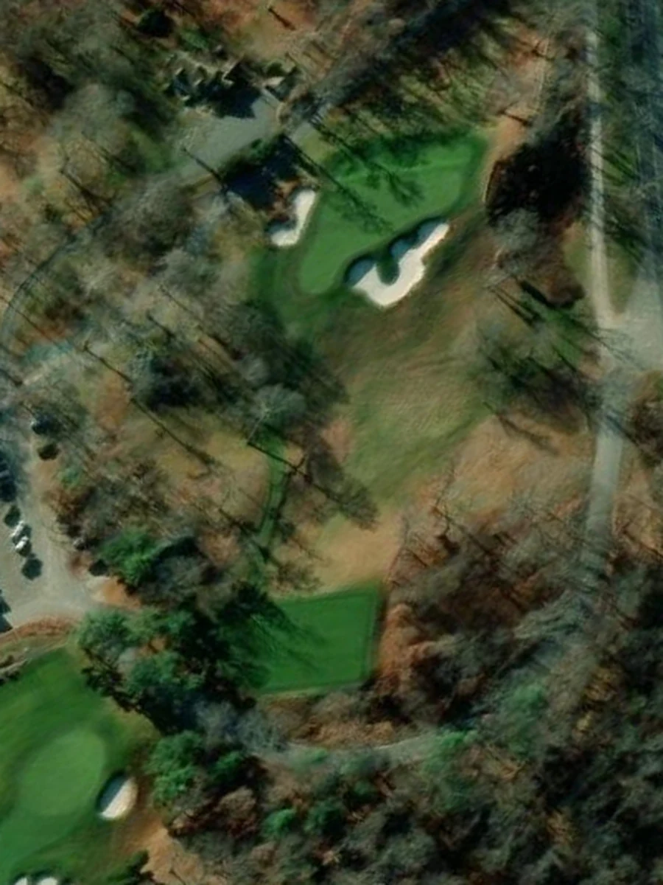
T1Esri · Maxar1132 yd · pin
Tomorrow's pin
40y deepfront
Bunker short-leftBunker right
Stop 1 of 18
Start with a real birdie look
Your numbersLoading your group plan…
Club and remaining-yardage estimates will appear here.
±20% landing windowCalculating your landing zone…
- Course danger notes will appear here.
Off the teePin plays about 132 from the yellow-card yardage. Favor the middle-left, but don’t short-side it left. A smooth club to the center is the percentage play.
Into the greenThe pin is front-left. Short is sand; long leaves plenty of green. Club for the number, not the adrenaline of the first swing.
Best-ball callClosest-to-pin hole: first player hits center-green. Once one is safely aboard, the others can aim 7 yards left of center.
Hole15
Pin vs center+5
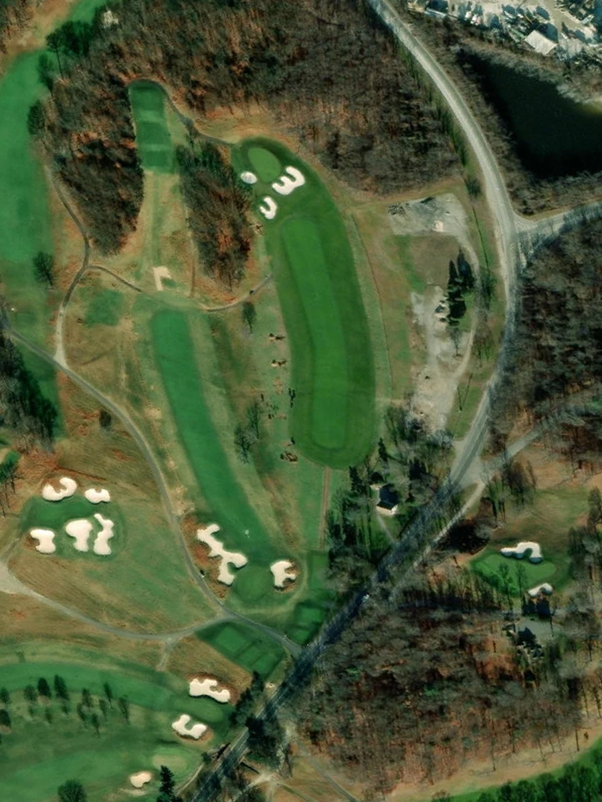
T12Esri · Maxar1220–230 yd · driver2Center green
Tomorrow's pin
36y deepfront
Rough both sidesUphill approachGreen bunkers
Stop 2 of 18
Bogey is a win on the hardest hole
Your numbersLoading your group plan…
Club and remaining-yardage estimates will appear here.
±20% landing windowCalculating your landing zone…
- Course danger notes will appear here.
Off the teeFavor the right-center. Do not chase extra yards into Bethpage rough.
Into the greenThe pin is back-right. If the green is out of range, lay to your best wedge number. Missing short-center is far better than either side.
Best-ball callGet one drive in play, then let the final players swing freely. The first stress-free 5 is valuable in best ball.
Hole16
Pin vs center-6
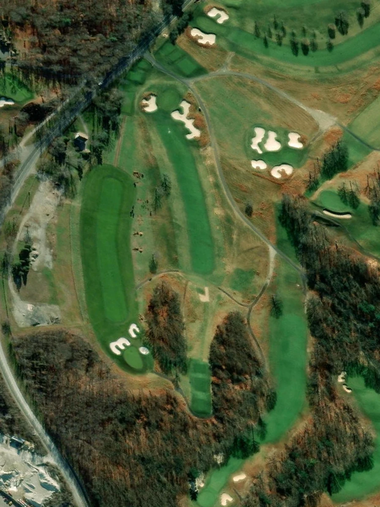
T12Esri · Maxar1220–230 yd · driver2Center green
Tomorrow's pin
32y deepfront
Left fairway bunkerDeep green bunkers
Stop 3 of 18
Use the downhill tee — stay out of sand
Your numbersLoading your group plan…
Club and remaining-yardage estimates will appear here.
±20% landing windowCalculating your landing zone…
- Course danger notes will appear here.
Off the teeDriver at the right-center of the fairway. The elevated tee helps, but the left bunker and rough can turn this into three shots quickly.
Into the greenFront-left pin plays about 425. Take enough club to clear the front hazards; center-green is the target from anything over 170.
Best-ball callAfter one fairway, a confident hitter can shade left for a shorter angle. Everyone else keeps double out of play.
Hole17
Pin vs center-10.5
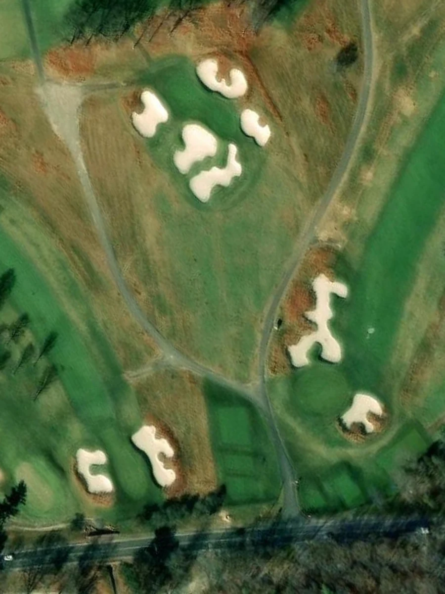
T1Esri · Maxar1168 yd · pin
Tomorrow's pin
29y deepfront
Five bunkersFalse-front feel
Stop 4 of 18
Front pin, but the miss is not short
Your numbersLoading your group plan…
Club and remaining-yardage estimates will appear here.
±20% landing windowCalculating your landing zone…
- Course danger notes will appear here.
Off the teeChoose the club that comfortably carries the front edge. Aim center, not directly at the tucked front-left flag.
Into the greenFour paces on means almost no cushion. A ball 20 feet long is excellent. Anything short can roll back or find sand.
Best-ball callFirst ball: middle of the green. With cover secured, the best iron player can attack the left half.
Hole18
Pin vs center-6.5
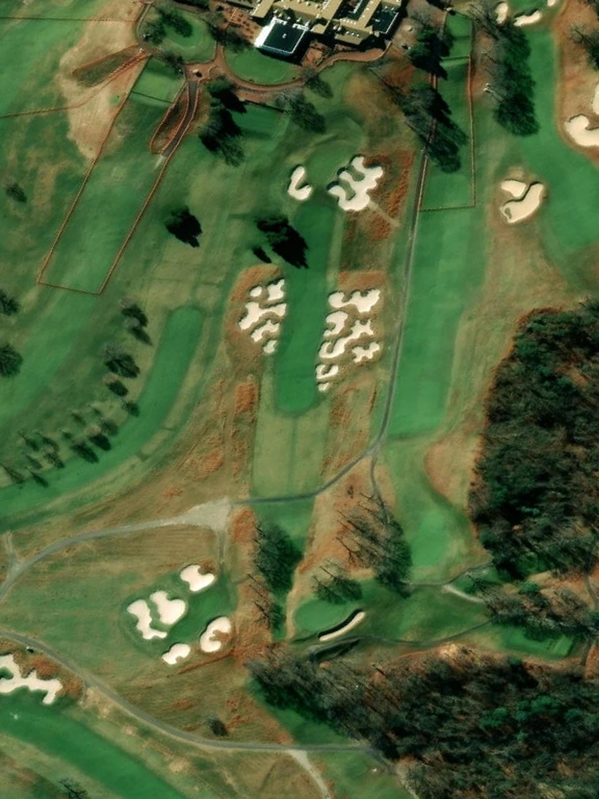
T12Esri · Maxar1220–230 yd · driver2Center green
Tomorrow's pin
31y deepfront
Narrow bunker chuteRough pinches landing
Stop 5 of 18
Fairway first; then chase the long-drive sign
Your numbersLoading your group plan…
Club and remaining-yardage estimates will appear here.
±20% landing windowCalculating your landing zone…
- Course danger notes will appear here.
Off the teeThe fairway narrows between bunkers, so pick a committed center line.
Into the greenFront-right pin plays about 339. Favor center-right and keep the approach below the hole.
Best-ball callMen’s and women’s long drive: put one controlled drive in the fairway first. Then the remaining eligible players can send it — only a fairway ball counts.
Hole1
Pin vs center+11
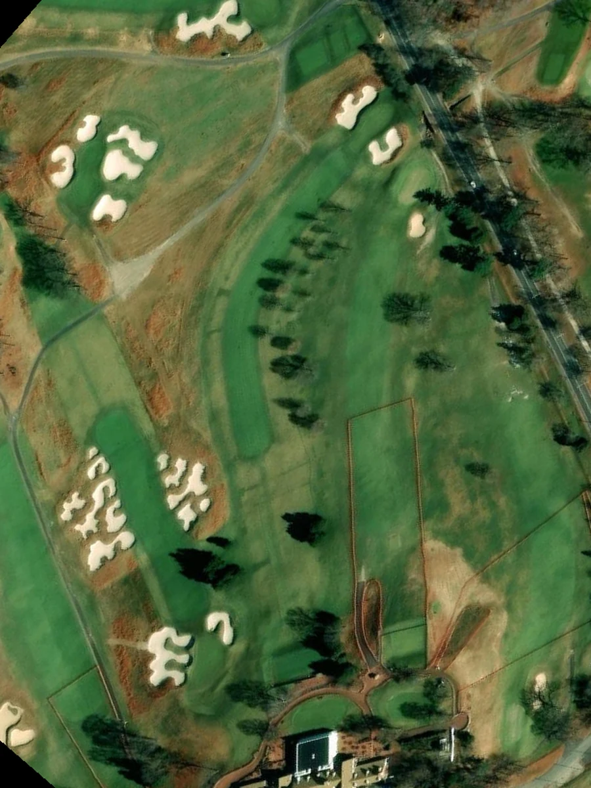
T12Esri · Maxar1220–230 yd · driver2Center green
Tomorrow's pin
38y deepfront
Trees rightRough through doglegBack pin
Stop 6 of 18
Don’t let the downhill view bait you right
Your numbersLoading your group plan…
Club and remaining-yardage estimates will appear here.
±20% landing windowCalculating your landing zone…
- Course danger notes will appear here.
Off the teeFavor the left-center. A push right can be blocked by trees.
Into the greenBack-right pin adds 11 yards. From rough, advance safely; from fairway, take the extra club and aim center.
Best-ball callLead with a fairway finder. Only after one is safe should anyone challenge the right side for a shorter look.
Hole2
Pin vs center+0.5
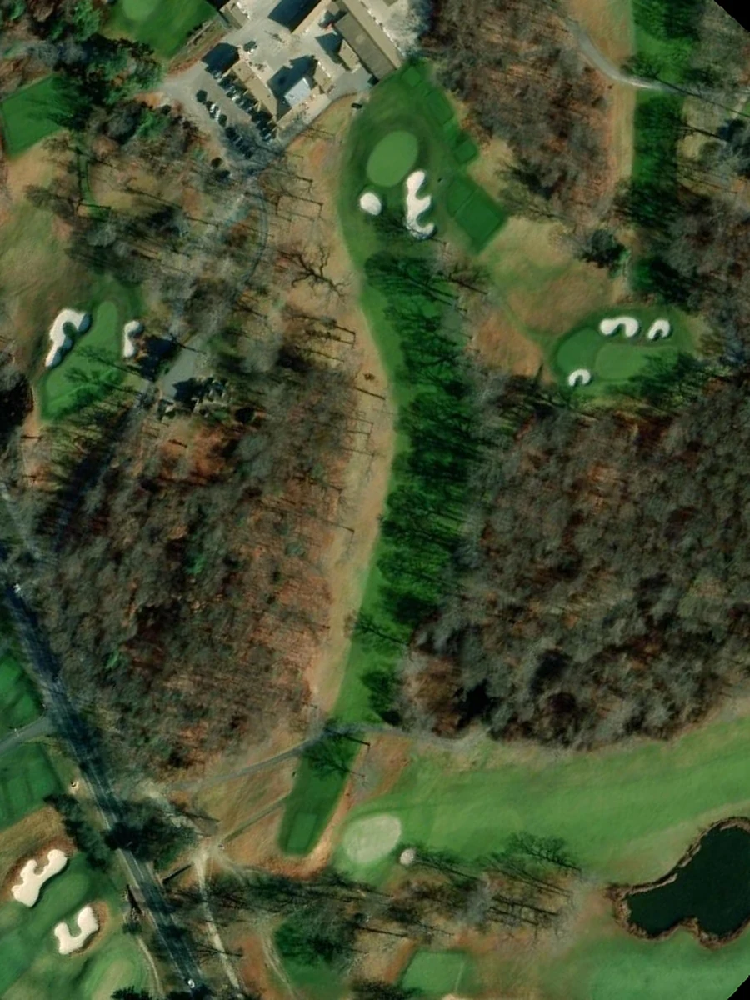
T12Esri · Maxar1175–180 yd · 3W2Center green
Tomorrow's pin
29y deepfront
Trees at cornerDeep bunkers rightSteep uphill
Stop 7 of 18
Short on paper, steep on the second shot
Your numbersLoading your group plan…
Club and remaining-yardage estimates will appear here.
±20% landing windowCalculating your landing zone…
- Course danger notes will appear here.
Off the teeChoose a reliable club to center-left and keep the dogleg in front of you. Driver is fine only if the shape is reliable.
Into the greenPin is center-right. The green sits well uphill: add a club, favor center-left, and accept a longer putt.
Best-ball callThis is a scoring chance if one tee ball finds grass. Don’t let all four players take on the corner.
Hole3
Pin vs center-3.5
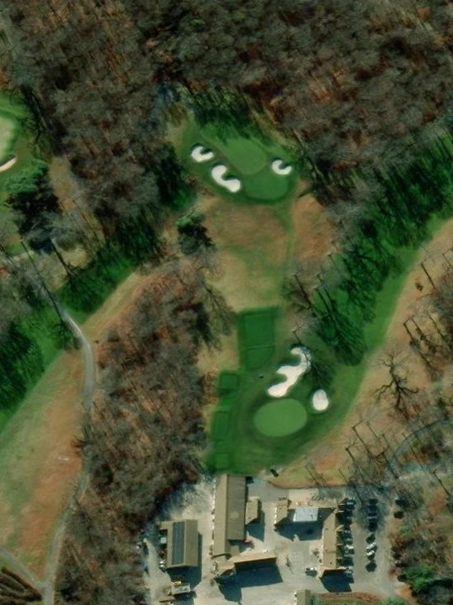
T1Esri · Maxar1125 yd · pin
Tomorrow's pin
39y deepfront
Deep front bunkerFalloff long-left
Stop 8 of 18
Middle of the green is plenty
Your numbersLoading your group plan…
Club and remaining-yardage estimates will appear here.
±20% landing windowCalculating your landing zone…
- Course danger notes will appear here.
Off the teePin plays roughly 125, slightly front-right. Choose a full, comfortable shot and aim a few paces left of the flag.
Into the greenThe green is wide but shallow. Avoid the deep front sand and the long-left falloff.
Best-ball callOne safe green first; then fire at the flag. This is one of your best chances to post a 3 or better.
Hole4
Pin vs center-5
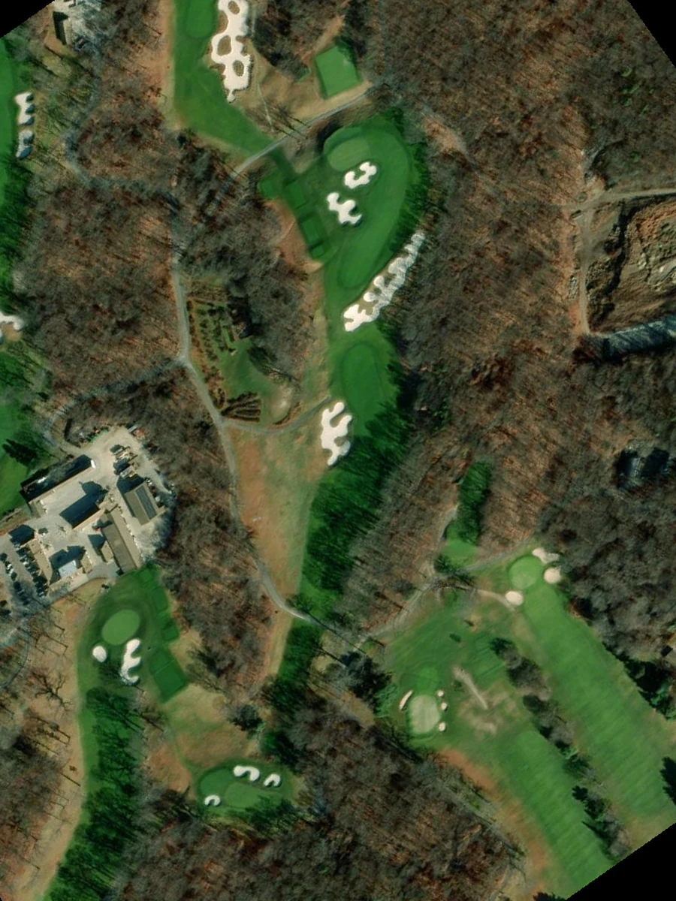
T123Esri · Maxar1225 yd · driver2175–180 yd · layup3Center green
Tomorrow's pin
24y deepfront
Glacier bunkerCross-bunker wallsElevated green
Stop 9 of 18
Three smart shots beat one heroic mistake
Your numbersLoading your group plan…
Club and remaining-yardage estimates will appear here.
±20% landing windowCalculating your landing zone…
- Course danger notes will appear here.
Off the teePlay left of the huge right-side Glacier Bunker. Set up a controlled layup, not a forced second.
Into the greenLay up short of the next bunker wall to a comfortable wedge number, then take enough loft to carry the front sand.
Best-ball callNo one needs to reach in two. Put two balls in position, then let the best-struck drive try the more aggressive second.
Hole5
Pin vs center+2
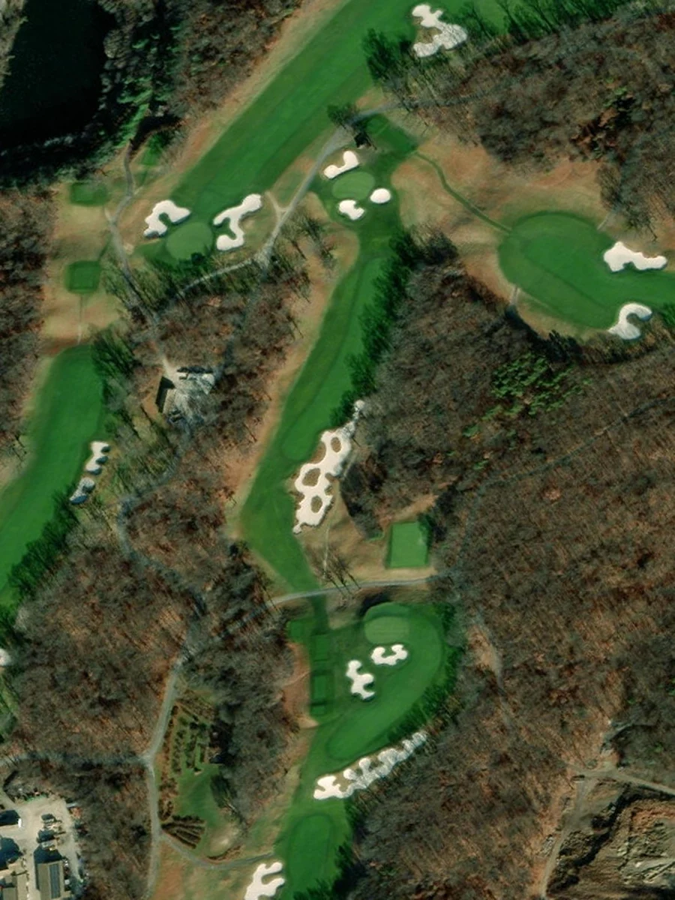
T12Esri · Maxar1175–180 yd · 3W2Center green
Tomorrow's pin
24y deepfront
Cross bunkersTrees rightUphill green
Stop 10 of 18
Respect the cross bunkers
Your numbersLoading your group plan…
Club and remaining-yardage estimates will appear here.
±20% landing windowCalculating your landing zone…
- Course danger notes will appear here.
Off the teeUse the club that finishes short-left of the diagonal sand unless the actual marker makes the carry obvious.
Into the greenFrom a long way out, play to the mouth/front-center rather than bringing every bunker into play.
Best-ball callAssign one player to lay back. Players with a safe ball behind them may challenge the carry only if the exact yardage fits.
Hole6
Pin vs center0
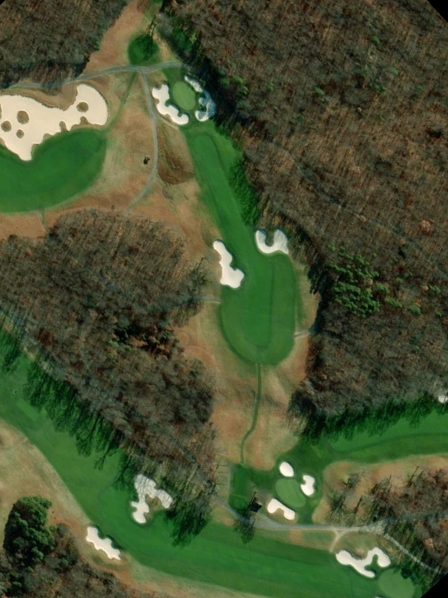
T12Esri · Maxar1175–180 yd · 3W2Center green
Tomorrow's pin
28y deepfront
Fairway bunkersSand around green
Stop 11 of 18
Pick the fattest landing area
Your numbersLoading your group plan…
Club and remaining-yardage estimates will appear here.
±20% landing windowCalculating your landing zone…
- Course danger notes will appear here.
Off the teeThe fairway pinches near the bunkers. A controlled long club finds the wide section; driver brings more sand into play.
Into the greenCenter-right pin. From long range, aim at the front opening rather than forcing a carry at the flag.
Best-ball callOne player lays to the wide section; after that, the strongest driver can press.
Hole7
Pin vs center-1.5
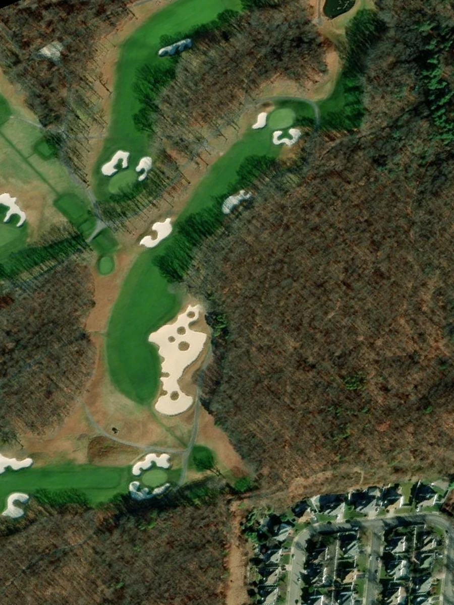
T123Esri · Maxar1225 yd · driver2175–180 yd · layup3Center green
Tomorrow's pin
29y deepfront
Trees and bunker rightGuarded green
Stop 12 of 18
A genuine three-shot birdie chance
Your numbersLoading your group plan…
Club and remaining-yardage estimates will appear here.
±20% landing windowCalculating your landing zone…
- Course danger notes will appear here.
Off the teePlay to the widest center-left portion and set up a comfortable layup.
Into the greenCenter-left pin. Lay up to a favorite full-wedge number, keeping the second away from the right-side trouble.
Best-ball callThis is where patient golf can produce a 4 or 5. Agree on wedge numbers before anyone hits the second.
Hole8
Pin vs center-9
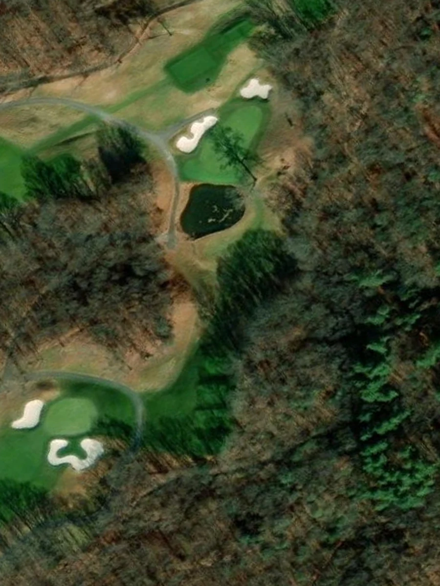
T1Esri · Maxar1143 yd · pin
Tomorrow's pin
44y deepfront
Pond short-leftBunker right
Stop 13 of 18
The only water: carry it and breathe
Your numbersLoading your group plan…
Club and remaining-yardage estimates will appear here.
±20% landing windowCalculating your landing zone…
- Course danger notes will appear here.
Off the teeFront-left pin plays roughly 143 and the shot is downhill. Use a club you know carries the pond; aim center-right, away from both water and flag.
Into the greenThe green is very deep. Long-center is much safer than short-left.
Best-ball callHole-in-one contest, but don’t donate four balls. Secure the green first, then let the rest chase the flag.
Hole9
Pin vs center0
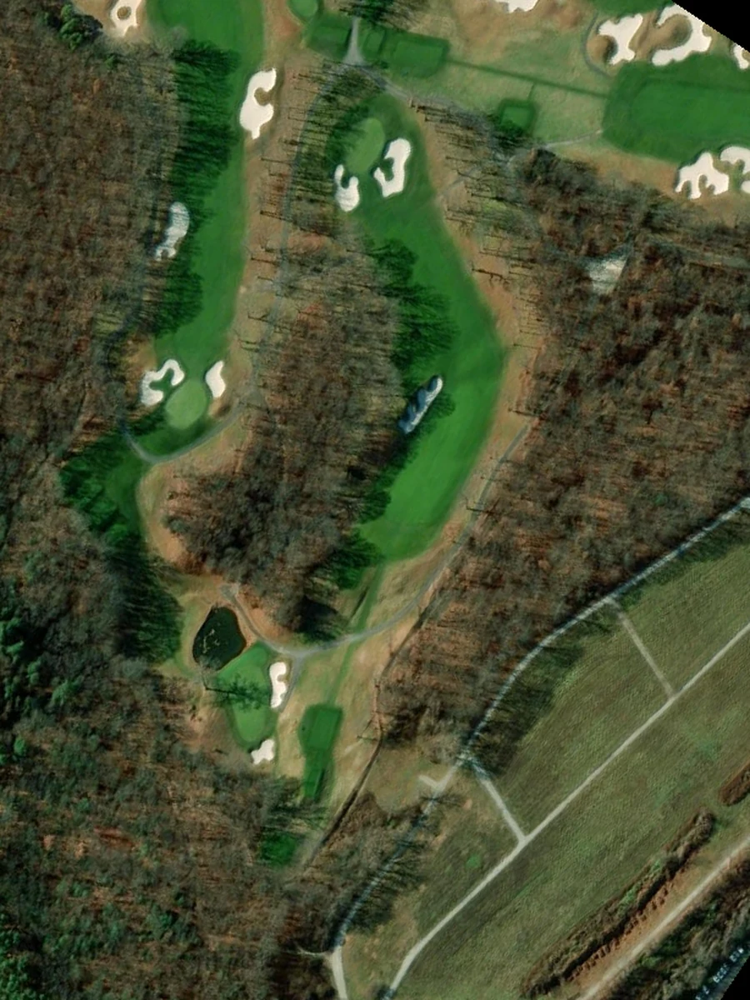
T12Esri · Maxar1175–180 yd · 3W2Center green
Tomorrow's pin
30y deepfront
Diagonal left bunkerNarrow angle
Stop 14 of 18
Position beats power on the short card yardage
Your numbersLoading your group plan…
Club and remaining-yardage estimates will appear here.
±20% landing windowCalculating your landing zone…
- Course danger notes will appear here.
Off the teeA reliable long club to center-right avoids the diagonal bunker on the inside-left. Driver is only for a very confident line.
Into the greenCenter-left pin. Attack from the fairway; from rough, use the middle of the green.
Best-ball callGreat best-ball opportunity. Lock in one position tee shot, then the remaining players can push closer.
Hole10
Pin vs center-2
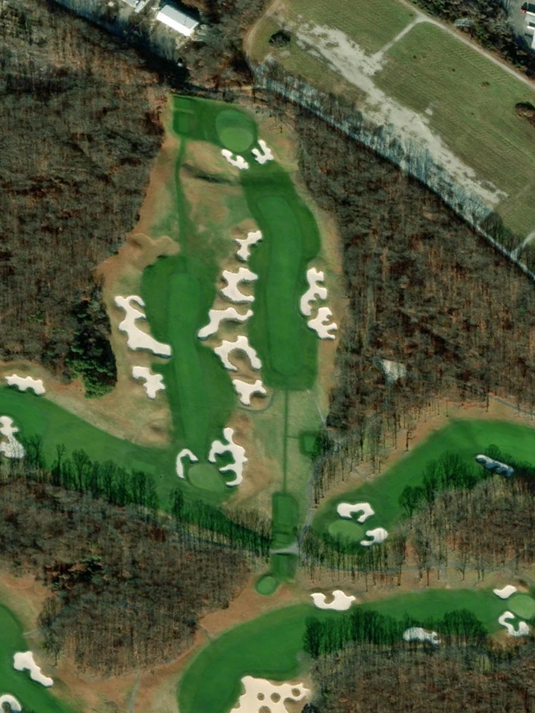
T12Esri · Maxar1220–230 yd · driver2Center green
Tomorrow's pin
28y deepfront
Many fairway bunkersNarrow corridor
Stop 15 of 18
Fairway is the entire assignment
Your numbersLoading your group plan…
Club and remaining-yardage estimates will appear here.
±20% landing windowCalculating your landing zone…
- Course danger notes will appear here.
Off the teeDriver only if it is behaving. Center is perfect; the hole’s bunker field punishes small misses.
Into the greenSlightly front-right pin. Aim center and resist short-siding right.
Best-ball callSend the steadiest driver first. This starts the demanding 10–12 stretch; a boring 5 can save the team.
Hole11
Pin vs center-4.5
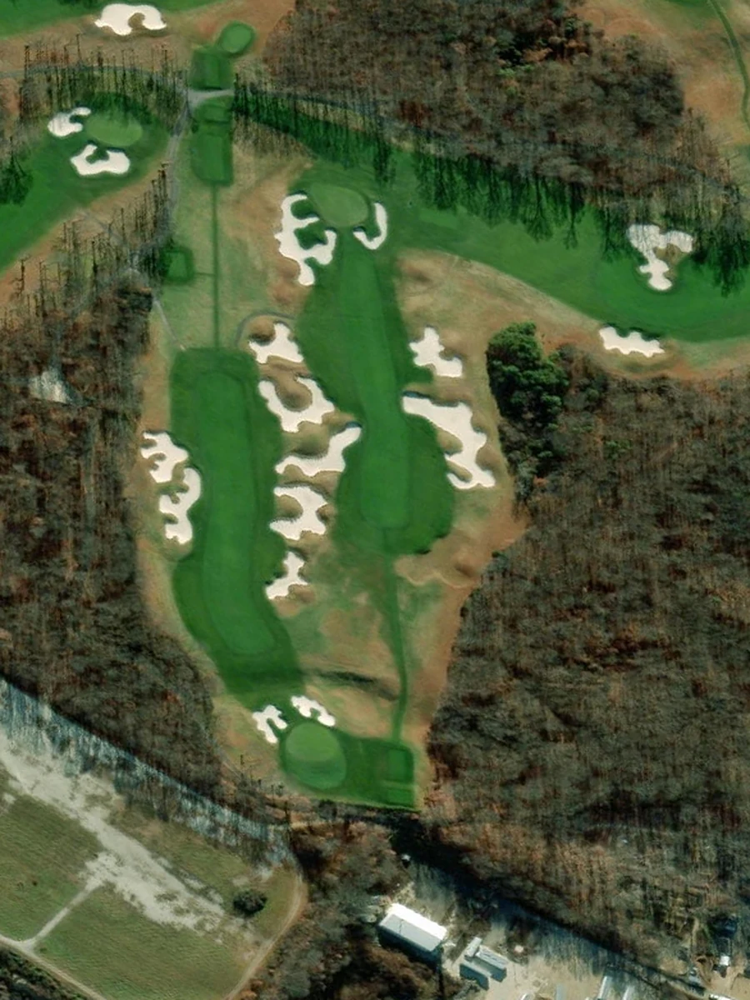
T12Esri · Maxar1220–230 yd · driver2Center green
Tomorrow's pin
31y deepfront
Bunkers left and rightElevated target
Stop 16 of 18
Treat the approach as a three-shot decision
Your numbersLoading your group plan…
Club and remaining-yardage estimates will appear here.
±20% landing windowCalculating your landing zone…
- Course danger notes will appear here.
Off the teeFavor center-right, away from the inside-left trouble.
Into the greenIf the green carry isn’t comfortable, lay short-center and leave a simple pitch.
Best-ball callOne player commits to the no-double route. A player with the best drive can take on the front edge.
Hole12
Pin vs center+2.5
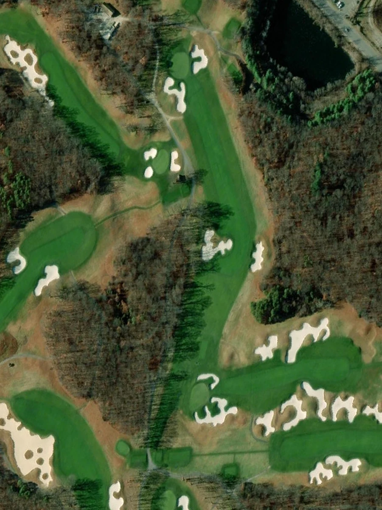
T12Esri · Maxar1220–230 yd · driver2Center green
Tomorrow's pin
35y deepfront
Long forced carry feelRight-side bunkers
Stop 17 of 18
No shame in playing this as a par 5
Your numbersLoading your group plan…
Club and remaining-yardage estimates will appear here.
±20% landing windowCalculating your landing zone…
- Course danger notes will appear here.
Off the teeDriver at left-center. Your priority is clearing the opening trouble and staying out of the right rough.
Into the greenBack-right pin makes it about 406. From 175+, center or front-center is the target; missing right is expensive.
Best-ball callWith a safe drive, one player may attack. Otherwise everyone builds a five with three playable shots.
Hole13
Pin vs center-1.5
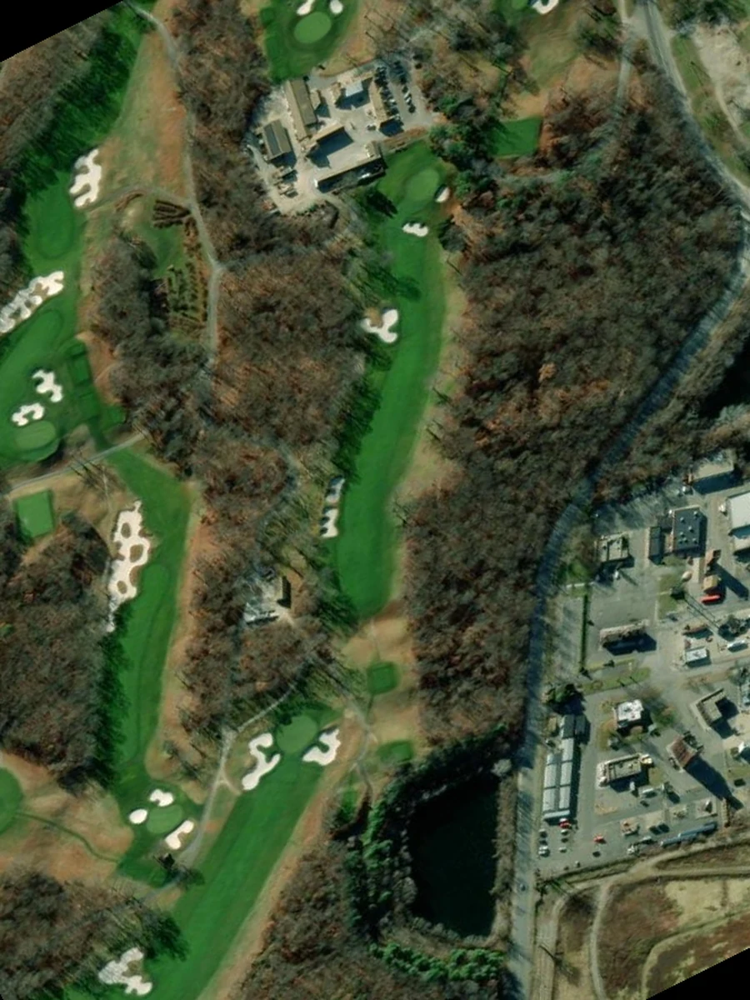
T123Esri · Maxar1225 yd · driver2175–180 yd · layup3Center green
Tomorrow's pin
29y deepfront
Bunker complexNarrow layup zone
Stop 18 of 18
Three committed shots, no forced carry
Your numbersLoading your group plan…
Club and remaining-yardage estimates will appear here.
±20% landing windowCalculating your landing zone…
- Course danger notes will appear here.
Off the teeFavor center-right. Don’t flirt with the inside-left bunker complex.
Into the greenUse the widest layup area and leave a comfortable third. The best angle matters more than the longest second.
Best-ball callChoose different layup distances across the group. The best angle, not the longest second, gets the green light.
Pocket rules
When in doubt at Bethpage
Rough: advance to grass; don’t force the green.
Fairway bunker: take the lip out of play first.
Long approach: front-center is a legitimate target.
Team covered: that is the moment to attack.
Food, drinks & recovery
Hospitality along the route
Stops appear inside each hole card and automatically follow your selected starting hole. Snacks are spread throughout the course.
Hot dogs
Poppers & wings
Smoothies & tuna tartare
Shared meeting point
Italian ice
Beef jerky & salamis
Sushi
Shot table & mini burgers
Keep something small in the bag between larger stops.
Complimentary IV hydration from Wellspring Drips, plus massage or chiropractic care from Long Island Spine & Sport.
Yardage & pin notes
Yellow-tee hole yardages use the published forward-tee scorecard (6,223 yards). The current USGA listing is 6,207 yards, so tournament markers may differ — the marker on the tee and your rangefinder always win. “Pin vs center” comes directly from tomorrow’s supplied pin sheet; blank pin adjustments on holes 6 and 9 calculate to approximately center.
The ±20% window is based on your entered typical total distance. Hazard distances are planning estimates interpreted from course aerials and published hole guides, not surveyed carry numbers. Forced carries are called out separately.
USGA ratingCourse & hazard guideCourse coordinatesAerial imageryWeather.gov API
Rain forecast updates hourly from the National Weather Service. Conditions can change. Aerial imagery © Esri, Maxar, Earthstar Geographics, and the GIS User Community. Target overlays are personalized strategy suggestions, not surveyed yardage markers.